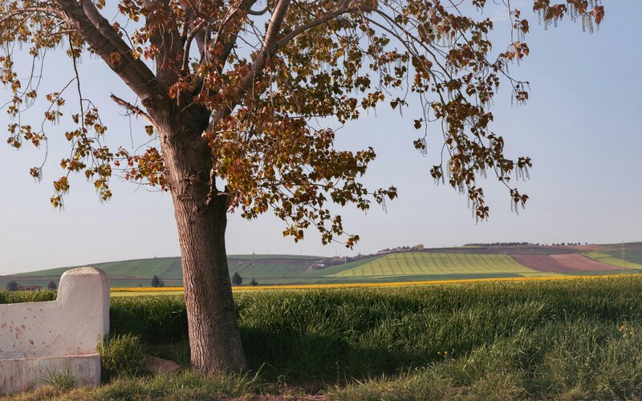
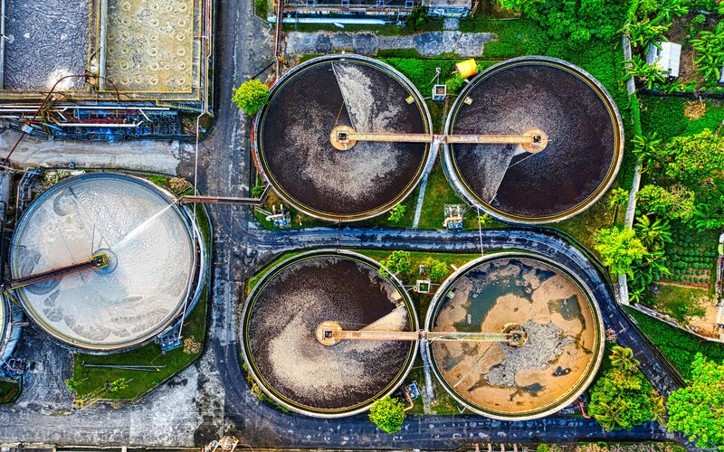

Solutions for the Water Crisis

Basilica Cistern in Istanbul, Turkey.
Cistern Solution: One solution that many countries in the Middle East have implemented is the use of Cistern systems. Cisterns were first used in the Byzantium and Ottoman Empire eras as a way to catch and store rainwater under cities or buildings. Recently, the Istanbul Metropolitan Municipality required that all new buildings, built on land over 1,000 meters, collect ground and rainwater in underground cisterns.
Agriculture in Turkey use a majority of the freshwater supply.
Increasing Drinking Water Through Agriculture: Another solution is reducing the amount of freshwater used for agriculture and converting it drinking water. According to Fırat Cukurcayır, president of the Meteorological Engineers Association in Turkey, “About 76 percent of the total freshwater supply of Turkey is used for agriculture, 13 percent for industry, and 11 percent is used as drinking water. The use of freshwater for agriculture must be reduced.” To lessen the use of freshwater for agriculture the government could direct farmers in water-stressed areas to focus on crops that require less water like lentils, chickpeas, and corn.
Water Treatment Plant where contaminants are removed from the water and made safe to drink.
Sorting Rainwater and Sewage Drainage: Another solution according to Fırat Cukurcayır is, “Rainwater drainage systems and sewage systems must be separated from each other in all residential units. If this is achieved, the load of both treatment systems will be reduced, serious energy saving will be achieved, and the use of rainwater in daily life and industrial situations will be provided.” Rainwater collected from roofs and the ground is less polluted and requires a simpler treatment before reuse. Sewage, however, is more polluted and requires an advanced treatment process before discharge or reuse. Separating these two will ease the treatment process making it a faster and more efficient operation.